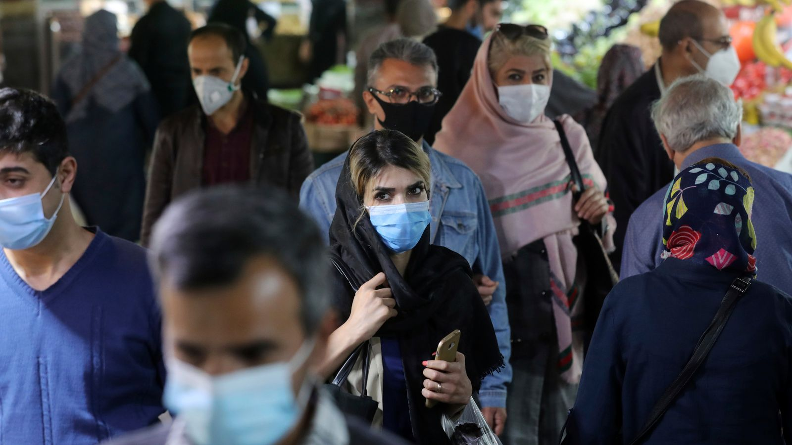
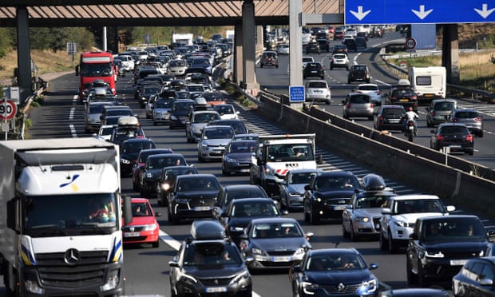

COVID-19: Boris Johnson joins world leaders in call for global treaty to prepare for next pandemic
Newspapers around the world have repeated the plea, which is also backed by countries including Portugal, Romania, Rwanda, Kenya, Greece, Chile, South Korea, Costa Rica, South Africa, Tunisia, Senegal, Spain, Ukraine, and Norway. They want a treaty similar to the settlement forged after the Second World War to build cross-border cooperation before the next international health crisis. (Read More...)
GLOBAL THREAT: Kim Jong-un preparing to launch sub nuke missile capable of striking ANYWHERE in the world, satellite images suggest
KIM Jong-un is ready to launch a submarine capable of striking anywhere in the world with nuclear missiles, satellite images suggest. Fresh pictures of North Korea's Sinpho South Shipyard indicate that the floating drydock has recently been repositioned alongside the construction hall's submarine launch quay.
According to analysis by experts from the think-tank Stimson Center, posted on 38north, it suggests the new ballistic missile submarine - which has been under construction for several years - may "be nearing completion or is ready to be rolled out and launched in the near future". The piece adds: "Alternatively, the drydock may be there for rail alignment adjustment with those on the quay, as no submarine is known to have been launched from this location as of yet." (Read More...)
Hong Kong: What is China's 'patriot' plan for electoral reform?
In its latest move to tighten control over Hong Kong, China is pushing for a controversial "patriot" plan to reform the city's elections. Beijing says the goal is to keep "unpatriotic" figures from positions of political power in Hong Kong. But critics warn it would mean the end of democracy in Hong Kong, eradicating whatever opposition there is left. (Read More...)
Britons in France could lose driving licences due to post-Brexit impasse
Thousands of British citizens in France have been left without a valid driving licence, or face losing theirs within months, because of bureaucratic overload and the failure of the two countries’ governments to sign a post-Brexit reciprocal agreement. (Read More...)
Brexit: Spain denies reports it will round up and deport Britons without visas

Spain has warned British tourists and second-home owners that they are not entitled to spend more than 90 days in the country at a time post-Brexit, but dismissed reports that offenders would be rounded up and deported if they overstay. Rules applying across the EU – which now apply to Britons – limit visa-free visits to those from outside the bloc to six months with an additional restriction of a maximum 90-day stay per 180-day period. (Read More...)
Myanmar military leaders hold lavish party hours after 114 killed in deadliest day
Myanmar’s junta leader and his generals threw a lavish party hours after 114 people were killed in the deadliest day since the military coup. Min Aung Hlaing and his top officers celebrated the country’s Armed Forces Day on Saturday despite lethal scenes earlier that prompted global outrage. Funerals of some of the victims — including a five-year-old boy and a 13-year-old girl — were being held yesterday, with some reports the military tried to intervene in the mourning. But even after the bloodshed, protesters yesterday returned to the streets of Myanmar’s two largest cities, Yangon and Mandalay. (Read More...)
...
...